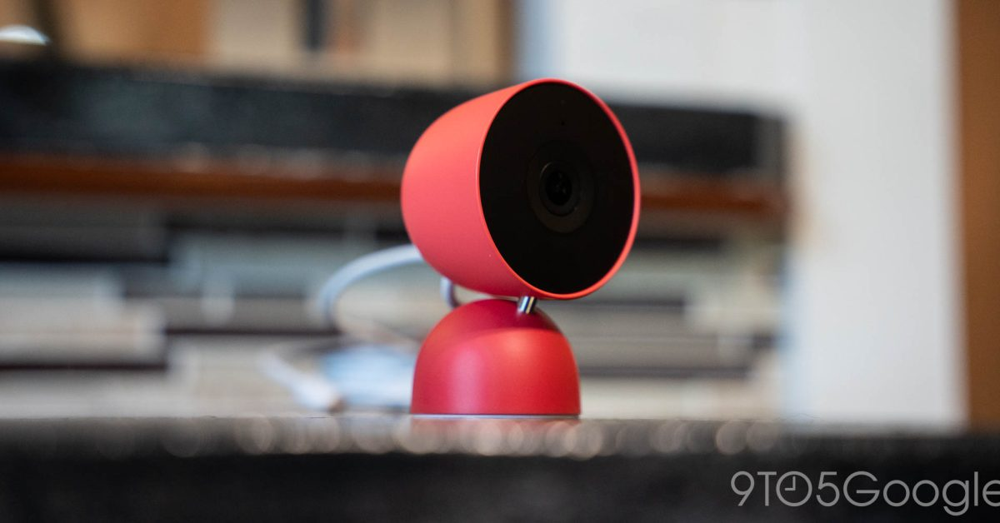
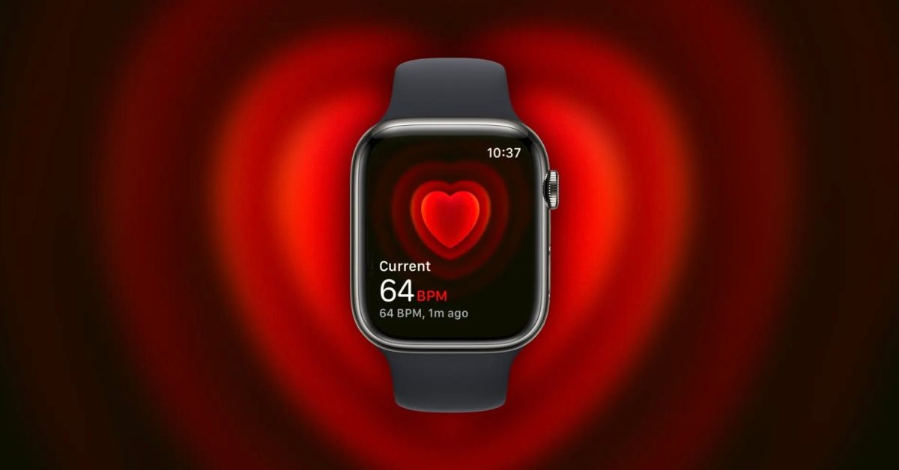
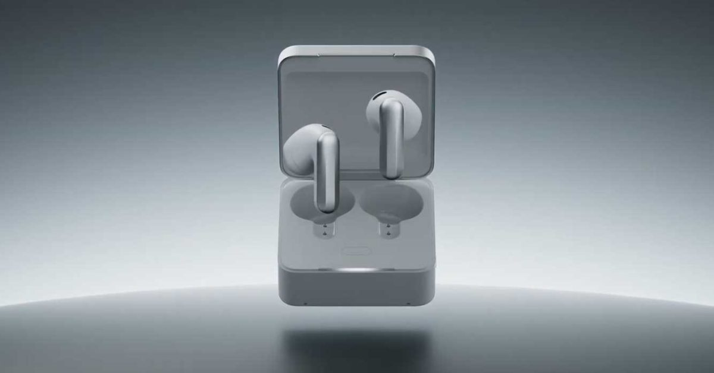

구글 네스트, 카메라·초인종 가격 대거 인상
구글이 네스트 브랜드의 거의 모든 보안 카메라와 초인종 제품 가격을 즉시 인상했다. 동시에 구글 TV 스트리머 가격도 올라, 스마트홈 하드웨어 사업 전반에서 수익성 확보 움직임이 감지된다.

구글이 네스트 브랜드의 거의 모든 보안 카메라와 초인종 제품 가격을 즉시 인상했다. 동시에 구글 TV 스트리머 가격도 올라, 스마트홈 하드웨어 사업 전반에서 수익성 확보 움직임이 감지된다.

유럽연합이 이용자 수가 급증한 챗GPT, 레딧, 로블록스를 가장 강도 높은 플랫폼 규제 대상으로 새롭게 지정했다. 대형 플랫폼으로 분류되면 콘텐츠 관리와 알고리즘 투명성에 대한 의무가 대폭 강화된다.
링킨드가 촛불처럼 흔들리는 불꽃 효과를 내는 스마트 조명 스틱을 선보였다. 매터(Matter) 표준을 지원해 별도 허브 없이 애플 홈 등 여러 스마트홈 생태계와 바로 연동되는 점이 눈에 띈다.

블룸버그 보도에 따르면 애플워치 시리즈12와 울트라4에 상시 심박수 측정 기능과 새로운 피트니스 앱이 추가될 예정이다. 세라믹 마감 모델 테스트 소식도 함께 전해지며 건강 관리 기능을 앞세운 웨어러블 경쟁이 한층 치열해지는 모습이다.

에이전틱 AI 기반 대화 요약 서비스로 주목받은 플라우드가 이어버즈 형태의 신제품 '플라우드 원'을 공개했다. 학생과 직장인의 메모·요약 도구에서 상시 착용형 개인 비서로 제품 정체성을 확장하려는 시도로 풀이된다.
메타가 레이밴 스마트글라스의 촬영 표시등을 끄는 대표적인 우회 방법을 막는 소프트웨어 업데이트를 배포했다. 카메라 내장 웨어러블의 확산과 함께 사생활 침해 우려도 커지고 있어, 신뢰 확보가 스마트글라스 시장의 과제로 부각되고 있다.